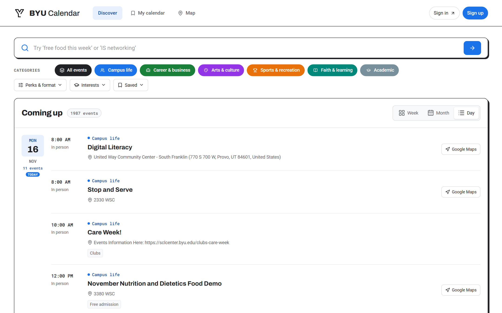
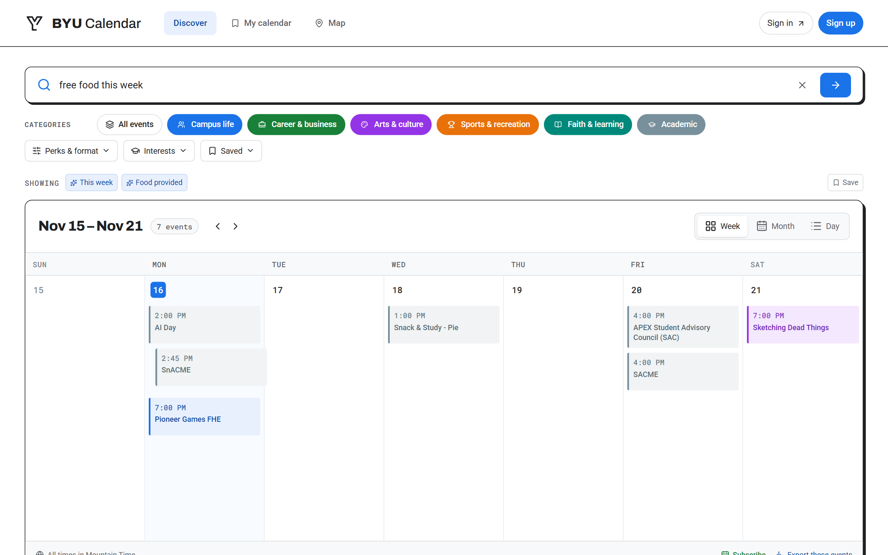
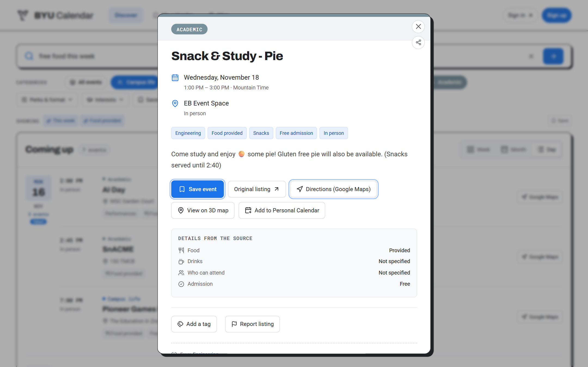
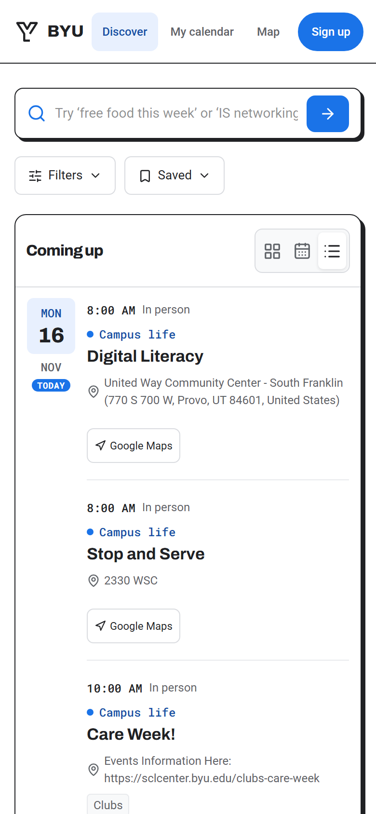
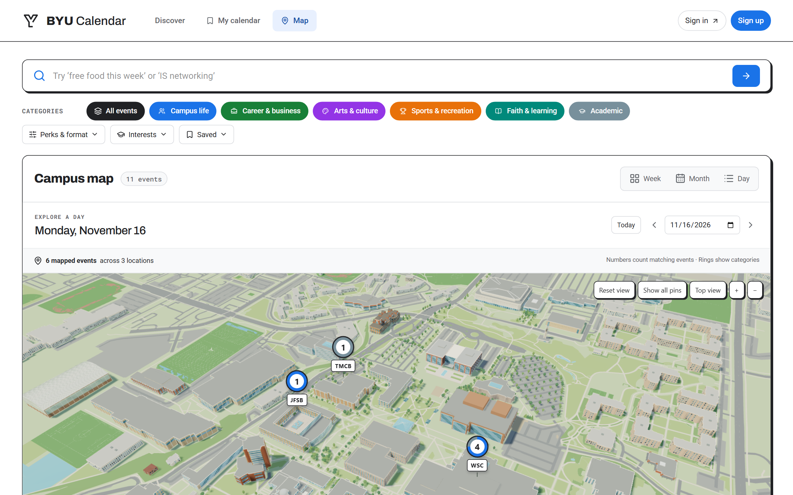

BYU Calendar
Every BYU Event in One Place.
Tanner Abbott·
Jarin Canar·
Nelson Lunt·
Austin Pence
BYU IS
25+ BYU Calendars. Zero Shared Search.
BYU EventsUniversity
Marriott / TNRBBusiness
ClubsStudent Orgs
BYU AthleticsSports
Y-ServeService
AIS / Law / EngDepartments
HandshakeRecruiting
Slack & FlyersSocial
25+Separate Calendars
→
0Shared Search
10+ Sites to Check
No Food / Perk Filters
No Campus Map
Real Campus Scale & Live Usage.
2,637
Merged Events
1,988
Upcoming Right Now
25
Connected Sources
SITE ANALYTICS · SINCE SEP 18
72% Desktop · 28% Mobile
733Page Visits
294Searches Run
289Events Opened
12Accounts
361 View Switches
41 Event Saves
23 Calendar Exports
20 Shares
17 Map Directions
One Unified BYU Event Feed.
https://byucalendar.com

01 Day-First Feed
02 6 Color Categories
03 Auto-Deduplicated
Plain-English Search & Food Filters.
free food this week
→
This week
Food provided
Food provided
Snacks
In person
Free admission
★ Important
IS / AIS
/?q=free+food+this+week&view=week

Mobile Ready, 1-Tap Maps & Calendar Sync.
Event Details · Verified Source


Live .ics Calendar Sync
1-Tap Apple / Google Maps
RSVPs & Morning Digest
Interactive 3D BYU Campus Map.
https://byucalendar.com/?view=map

Live Demo: byucalendar.com.
https://byucalendar.com/?view=day
Built for Production: Real-Time Sync & Tests.
All FeedsICS · JSON · HTML
→
NormalizeDedupe & Tag
→
Cloudflare D1Auth · Resend · RSVPs
→
Edge + WebGLNext / Workers / Three.js
20 minAuto-Sync Refresh
428+Automated Tests
Scan to Try BYU Calendar.
https://byucalendar.com ↗Tanner Abbott · Jarin Canar · Nelson Lunt · Austin Pence · BYU IS